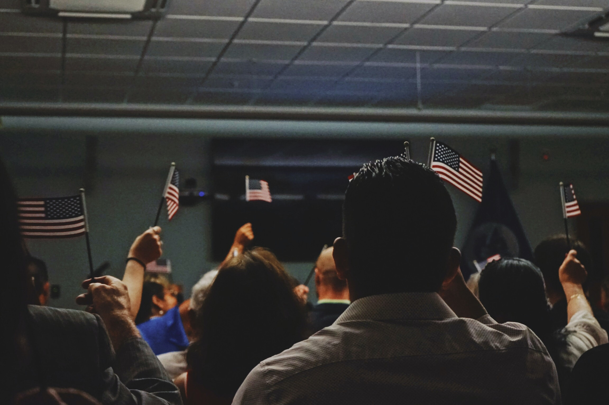

Immigration is the action in which people who live in other countries come to the United States to live permanantely. In the United States we have many Immigrants most who come here to find a better opportunity for themselves and their familys yet because they arent classified as a citizen of the Unites States until they have legal documents stating so they are considered Illegal. The proccess with which Immigrants go about to get these papers is an extremely long and complicated proccess. Requirements include having a green card for at leat 5 years prior, be above the age of 18 as well as know how to speak, read and write the english language in order to file for a US citizenship. Today we still here such a large problem on Immigration because many of the politicians in power want to send undocumented Immigrants back to their country even though Immigrants are some of the hardest workes the U.S. has working labor jobs that pay little yet provides us as a state or a country with things we come to use even daily. It isnt right to drive people away who only want a better life for themselves.
An image taken by Kerwin Elias demonstrates a room full of Immigrants raising the American Flag as a representation of Freedom
This video is a great example of two Immigrant woman and how they live day to day. It goes into detail on unfair and abusive labor work that they experience monthly by working so much for such long periods of time with no breaks only to get payed less than minimum wage or nothing at all for some months. As immigrants they are scared to seek help because even the systems made to help them succeed are against them or a possibility of being sent back to their country. It also emphasizes how important it is to see humans as people like everyone else and not as a wage or labor.
Credits:wearemitu.com.Youtube.Web. May 28. 2017
Copyright © 2022 Sierra Corporan - All Rights Reserved